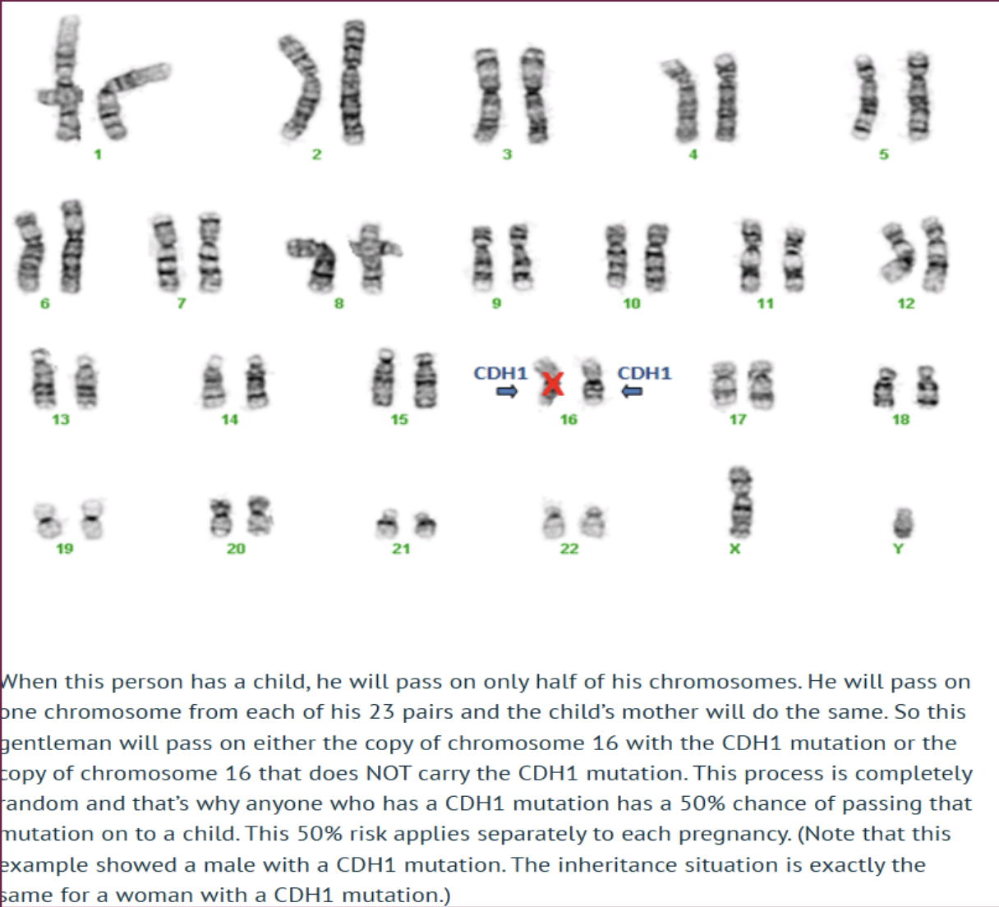

Genetics • Disease
CDH-1 Gene Mutation
Introduction - genetics vs. environmental cancer:
Stan Walker, Sidney Raz, Meghan Winston, Justin Hardy, Georgia Gardiner. You may have heard of some of these famous people before, but do you know what they all have in common, apart from the fact that they are all celebrities? You might not have guessed this, but they all carry the mutated CDH-1 gene, resulting in stomach or breast cancer.
We usually hear about people developing cancer due to high doses of radiation, consuming alcohol, smoking cigarettes, and many more reasons regarding a person’s lifestyle choices, but an underrepresented group of cancer, (which I would say is as important, if not more important than environmental), is genetic cancer. Only 5% of all cases related to cancer are inherited forms, while the remaining 95% are due to environmental factors. On the whole, stomach and breast cancers account for around 17% to all cancer diagnoses. If we combine this, the percentage for inherited stomach/breast cancer cases worldwide sum up to approximately 6-13% of cases.
Cells, DNA, and the CDH-1 mutation:

Our bodies have 30-40 trillion cells, all with different functions. Different cells join up to make different types of tissues, which will then go on to make different organs. These will combine with other organs to develop organ systems, which then finally complete a whole organism.
All of our cells (apart from red blood cells) contain a nucleus, which has a genetic code containing DNA, which codes for amino acids, building different, unique proteins which our bodies need to function well. Although extremely important, our DNA bases only have 2 pairs: A-T, and C-G (or T-A and C-G), which sum to about 4,000,000,000 bases in genetic code. Genes are extremely specific segments of DNA, which have certain orders of the 4 bases A, T, C and G - the order is called the ‘sequence’. Each gene provides instructions for individual cells for constructing specific proteins/products. If, when the cell duplicates its DNA (or part of it) incorrectly, a mutation could arise, which is basically a permanent change to the gene’s sequence. Now, the gene is unable to provide correct details for bodily functions, which means that the body is missing an essential product/protein, as the gene is coding for an incorrect/different protein, which the body will produce instead of the previous one.
One specific gene in our body is known as CDH-1 (e-cadherin). It is found surrounding the epithelial cell’s membranes. These cells (epithelial) line the surfaces and cavities of important structures within our body. E-cadherin belongs to a larger protein family called the ‘cadherins’ - the function of the cells is to help surrounding cells ‘stick’ to their neighbours, to form structured, organised, uniform tissues. Apart from this, e-cadherin is also utilised for transmitting chemical signals within cells. It also controls cell movement and cell maturation, acts as a tumour suppressor, as well as regulating gene activity within the nucleus: this is a very important protein. E-cadherin is like a type of glue which keeps all cells neatly arranged in the right place - without this tissues can fall apart.
When correct (without mutations), e-cadherin provides instructions for the cell to produce the protein, which is fundamental in cell adhesion (see paragraph above), maintaining tissue integrity. However, when a mutation occurs, the cell/body will no longer be able to produce this protein.
Hereditary Diffuse Gastric Cancer (HDGC) is caused by a mutation which has been inherited in the CDH-1 gene specifically. As mentioned previously, this prevents the production of the CDH-1 protein. All of us, including me and you, have 2 copies of the gene CDH-1, both inherited from each parent. If one of these genes carries a mutation, the offspring will have the HDGC syndrome. In the future, when they have children, each child will have a 50% chance of inheriting this gene mutation. There is a 50% chance of future generations inheriting this gene, as the child’s DNA will be half from the mother and half from the father. If one parent is a carrier, then there will be a 50% chance that they either: pass on the chromosome with the mutation, or the chromosome without the mutation.
Diagnoses, treatment and spreading awareness:
On the bright side to this, you can be treated! Since the CDH-1 protein is the most understood in the cadherin family, scientists are working hard to cure this genetic mutation, for people who will develop stomach/breast cancers in their lifetime. Doctors and oncologists (cancer specialists) recommend endoscopies - procedure that looks inside your body to take images of organs, bones, etc.; biopsies - samples of skin/tissue taken to run tests on disease; and/or a gastrectomy - procedure which removes the whole/parts of the stomach, but there is still a chance that the cancer can come back. In order to get a wider understanding of any genetic disorder, genetic counselling is a great way to understand the issue.
I’m sure that you now know a lot more about this particular mutation of CDH-1 than you knew before reading my article. However, there are still millions of people out there who are unaware of the CDH-1 gene mutation, and have no knowledge or understanding of the principles of inherited cancer. This results in scientists not being able to research more into finding drugs to cure this disease, which would help to save thousands of lives.
I only know about this because my poor mum has the CDH-1 gene mutation. She had a total gastrectomy after being diagnosed with stage 3 stomach cancer only four years ago. She is now under surveillance for Breast Cancer. My sister, who is 12 years old, and I cannot get tested for this mutation until we are 18 years old.
Inform your friends and family about this article - spread the word, and aim to kill the disease!